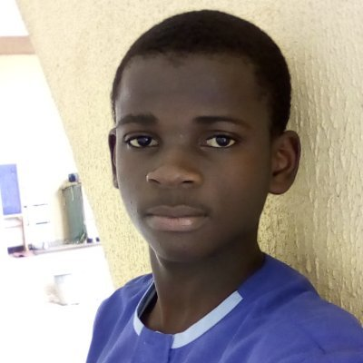

ACHIEVEMENTS
Python Programming

Front End Web Development

Winner of many
awards
TRIBIUTES TO
BSc Electrical Electronics Engineering OAU
MUJAHID is a student of Obafemi Awolowo University. He's studying Electrical and Electronics Engineering Department of Electrical and Electronics Engineering, Faculty of Technology. He's a nerd - loves computer as in love not like. He's got a lot of interest in the eletronics and loves both software and hardware automation. I love him so much for his dedication, perseverance and positive attitude towareds success.
Python Programming
Front End Web Development
Winner of many
awards
Thank you
for all
you've done